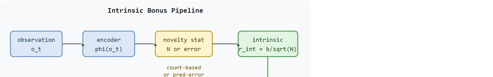

"Curiosity is a reward for being somewhere you have not been, handed out before the environment says anything."
An Intrinsically Motivated Field Robot
This section assumes familiarity with the cost and risk framing from section 19.1. The intrinsic bonus designs introduced here are extended in section 19.3, which adds safety constraints that prevent curiosity from driving the agent into hazardous states, and in section 19.4, which adapts count-based and prediction-error bonuses to partially observable settings where the agent cannot directly count true world states.
A warehouse robot receives its first non-zero task reward only after it has already opened a door, crossed a threshold, and picked up the correct bin. Before that moment, the external signal is silent for thousands of steps. Modern embodied agents escape this silence by generating their own rewards: bonuses for visiting new grid cells, for observations the forward model cannot yet predict, for states no ensemble member agrees on. These intrinsic signals are not curiosity as a metaphor; they are a precisely defined auxiliary reward added to every timestep. You will derive the count-based bonus, trace how prediction error and ensemble disagreement replace explicit counts in continuous spaces, and audit when novelty-seeking stalls or misfires on sensor noise.
Drop a reinforcement-learning agent into a five-room apartment with reward only at the far door, and it can wander for fifty thousand episodes before stumbling on a single point: the same agent, paid a small bonus each time it sees something new, finds that door in roughly three hundred. That two-orders-of-magnitude gap is the entire subject of this section. It assumes familiarity with reward specification from Chapter 18 and partial observability from Chapter 2. For the broader module context covering cost, safety, and transfer, see Section 19.1.
This section develops the technical contract for internal exploration rewards. Counts, pseudo-counts (a density-model estimate of how often a state would be visited, used when states are too numerous or continuous to count literally), prediction error, disagreement, and novelty all add an auxiliary reward for the unknown, but they differ in what they treat as unknown. As Figure 19.2A illustrates, the goal is to point the agent toward learnable gaps, not to reward every shiny distraction equally.

The key question is practical: what feature representation receives the count or prediction error, and does that representation align with embodied progress such as new viewpoints, reachable states, object contacts, or goal-relevant affordances?
An intrinsic bonus earns its place when it changes the measurable action interface. The reader should keep asking whether the bonus makes the agent inspect a useful doorway, revisit a promising frontier, or avoid wasting rollouts on sensor noise.
The feature encoder $\phi$ is the single most consequential design choice in the entire bonus pipeline. On a physical robot, a poor encoder fires the bonus on irrelevant variation such as lighting flicker or IMU drift (small errors from the inertial measurement unit, the onboard sensor that estimates orientation and acceleration, which accumulate over time even when the robot is not actually moving). Meanwhile genuine progress goes unrewarded: opening a door, crossing a threshold, making contact with an object. Real hardware cannot simply reset and retry. Wasted rollouts on sensor noise therefore wear actuators, deplete batteries, and burn deployment time. An encoder that tracks controllable, task-relevant state is a physical-safety and resource constraint, not just an accuracy concern.
In practice, encoders are built by projecting raw observations onto a representation that changes only when the robot's physical situation changes. For grid-based navigation, this means hashing the discretized pose; for manipulation, it means using contact flags from force-torque sensors or binary door-state signals. Learned encoders (used by the Intrinsic Curiosity Module (ICM) and Random Network Distillation (RND)) train an auxiliary network to predict the effects of actions on the next latent state, which filters out observation dimensions the agent cannot influence. The key check is whether $\phi(o_t) = \phi(o_{t'})$ whenever the underlying task-relevant state is the same, regardless of lighting or sensor noise.
With that invariance check in hand for the encoder, the per-step quantities the bonus is built from follow directly.
The agent at time $t$ receives an observation $o_t$, encodes it as features $\phi(o_t)$, chooses an action $a_t$, and receives both an external reward $r_t^{ext}$ and an intrinsic reward $r_t^{int}$. A count-based bonus often uses a form such as $r_t^{int}=\beta / \sqrt{N(\phi(o_t))}$, where $N$ is the visit count for the feature bin and $\beta$ sets the strength of the bonus.
How many distinct room-entry events must a robot in a five-room apartment collect before a count-based bonus stops it revisiting the start room? Informal MiniGrid experiments put the number near fifty, though the exact figure depends on room size, bonus scale, and encoder choice: the agent needs that much contrast between visited and unvisited bins before the bonus gradient overcomes the policy inertia pulling it back to familiar ground. The same contrast drives the headline scale gap. A sparse-reward agent in a five-room MiniGrid environment typically needs around 50,000 episodes to stumble across the goal; a properly tuned count-based bonus cuts that to roughly 300.
So far: the bonus is an extra per-step reward $r_t^{int}=\beta/\sqrt{N(\phi(o_t))}$ computed from a visit count on encoded features, and it works by making revisited bins pay less than unvisited ones. The next paragraphs replace that literal count with a learned notion of novelty for spaces too large to count over.
Curiosity methods replace explicit counts with learnability. A forward model predicts $\phi(o_{t+1})$ from $\phi(o_t)$ and $a_t$, then rewards prediction error when the next observation is not yet well modeled. A related family uses an ensemble disagreement bonus: train $K$ independent forward models (or value-function heads) on the same data, then set $r_t^{int} = \text{Var}_{k}\bigl[f_{\psi_k}(\phi(o_t), a_t)\bigr]$. High variance signals that the agent has seen too little data in that state for the models to agree. Ensemble disagreement avoids the "noisy TV" failure mode: pure sensor noise raises every model's error equally, so inter-model variance stays low and no bonus fires.
Think of the ensemble like a group of hikers who each took a slightly different route to the same trailhead and now have to predict what lies over the next ridge. Where the terrain is familiar, all of them give the same answer because they have all seen similar ground before. Where the terrain is truly new, their guesses scatter wildly. The agent's bonus is highest at that ridge: not because any single hiker is confused, but because they disagree with each other. A passing cloud that confuses every hiker equally produces no disagreement and no bonus, just as sensor noise that uniformly raises every model's error leaves inter-model variance near zero.
The mechanism is a sequence of transformations: encode the observation, update the novelty statistic, compute the intrinsic bonus, combine it with the task reward, and monitor whether the selected action reaches new useful state. Each transformation should have a measurable contract, otherwise a high intrinsic return can hide aimless motion.
The algorithm below is written for the count-based and prediction-error modes, since those are the two forms with a direct code path in this section; an ensemble-disagreement implementation follows the same shape with step 3 replaced by "compute the variance of $K$ forward-model predictions" and step 7 replaced by "update all $K$ models", and it is worth building once the single-model version is working, since disagreement is the mode that resists the noisy-TV failure described above.
Input: policy $\pi_\theta$, feature encoder $\phi$, bonus scale $\beta$, external reward $r^{ext}$, forward model $f_\psi$ (for prediction-error mode), visit counts $N$, episode budget $T$
Output: updated policy parameters $\theta$, logged trace of $(o_t, \phi(o_t), N(\phi(o_t)), r_t^{int}, r_t^{ext}, a_t)$ per step
Code Fragment 19.2.1 shows the count-based idea without hiding it inside a learner. A repeated feature receives a smaller bonus, so the agent has a measurable reason to leave the familiar hallway and test a new cell.
# Compute a count-based intrinsic bonus for visited feature bins.
# Repeated bins receive smaller rewards, so novelty decays locally.
from collections import Counter
import math
feature_trace = ["hall:0", "hall:1", "hall:1", "door:2", "door:2", "room:3"]
counts = Counter()
beta = 0.2
for feature in feature_trace:
counts[feature] += 1
bonus = beta / math.sqrt(counts[feature])
print(feature, counts[feature], round(bonus, 3))feature_trace. The second visit to hall:1 and door:2 receives a lower reward, which makes the decay in novelty visible.Trace the algorithm with $\beta = 0.2$ and the count bonus $r^{int} = \beta / \sqrt{N(z) + 1}$ on a tiny episode where the agent visits cell A, then cell B, then returns to cell A. Start with empty counts.
Step 1 (visit A). Before this step $N(A) = 0$, so $r^{int}_1 = 0.2 / \sqrt{0 + 1} = 0.2 / 1 = 0.200$. Then increment: $N(A) = 1$.
Step 2 (visit B). Before this step $N(B) = 0$, so $r^{int}_2 = 0.2 / \sqrt{0 + 1} = 0.200$. Then increment: $N(B) = 1$.
Step 3 (return to A). Now $N(A) = 1$, so $r^{int}_3 = 0.2 / \sqrt{1 + 1} = 0.2 / 1.414 = 0.141$. Then increment: $N(A) = 2$.
The bonus for re-entering A dropped from 0.200 to 0.141, a 29 percent reduction, while the never-before-seen B still paid the full 0.200. That gap is exactly the gradient that pulls the policy off familiar ground: revisiting A is now worth less than discovering a new cell C would be.
Expected output: repeated bins should show lower intrinsic reward than first-time bins. If the feature encoder maps every camera frame to a unique bin, this diagnostic would never decay and the agent would be paid for visual noise.
The from-scratch fragment is for understanding. In a practical system, use Gymnasium or MiniGrid to expose sparse-reward environments, CleanRL or Stable-Baselines3 for baseline learners, and Habitat-Lab when novelty must be measured over embodied navigation states. The shortcut removes boilerplate so the engineering attention goes to feature design, bonus scaling, and diagnostic traces.
Count-based bonuses (such as $r^{int} = \beta / \sqrt{N(\phi)}$) work best when the feature space is small and discrete, for example grid cells, door-key states, or object contact flags. They degrade when the feature encoder maps similar observations to distinct bins and the counts never accumulate. Curiosity methods such as the Intrinsic Curiosity Module (Pathak et al., 2017) or Random Network Distillation (Burda et al., 2018) work better in continuous or high-dimensional observation spaces because they estimate novelty through prediction error rather than literal counts. Prefer count-based bonuses when you can inspect the feature bins directly; prefer prediction-error bonuses when the observation space is image-based and a discrete partition would be too coarse to capture meaningful state differences. In both cases, set $\beta$ so the intrinsic reward is smaller than the external reward by the time the agent begins reliably reaching the first task milestone: a common starting value is $\beta = 0.01$ for dense-reward tasks and $\beta = 0.1$ for sparse-reward tasks, verified by plotting the two reward curves in the first few thousand steps.
When using Random Network Distillation (RND) in continuous embodied environments, normalize the intrinsic reward stream by a running estimate of its standard deviation before combining it with the external reward. Without normalization, the raw prediction error can spike by two to three orders of magnitude during the first few thousand steps and override the external signal entirely, preventing the policy from learning the task at all. In practice (as of 2024), most maintained RL libraries handle this via a running-statistics wrapper applied to the intrinsic reward buffer; verify by plotting the ratio of mean intrinsic reward to mean external reward, which should stay below 1.0 once the agent begins reaching task milestones.
/camera/color/image_raw topic and confirm that $r_t^{int}$ does not rise; if it does, tighten the feature encoder or switch from pixel-level prediction error to proprioceptive-state prediction (joint angles and end-effector pose), which is insensitive to visual noise by construction.The common mistake is to reward prediction error without checking whether the error is controllable. A flickering monitor, reflective floor, or moving person can keep curiosity high while the robot learns little about the task.
A common assumption is that a larger intrinsic bonus always produces better or faster exploration, treating the bonus scale as a dial to turn up when coverage stalls. In embodied AI this is wrong: when the bonus is too large relative to the sparse external reward, the policy learns to maximize novelty and ignores task progress entirely, spending every rollout chasing sensor variation in corners of the environment that have no path to the goal. The correct mental model is that the intrinsic reward is a temporary scaffold, a form of reward shaping with its own hazards, not a permanent objective. Its scale must stay below the external reward once the agent begins reaching task milestones, and it should decay as visit counts accumulate so that the agent transitions from exploring to exploiting what it has discovered.
A navigation team using curiosity should log external reward, intrinsic reward, feature-bin counts, map coverage, collisions, and whether each newly visited area is reachable again. The logs reveal whether novelty is expanding useful coverage or paying the agent to chase aliasing and camera noise.
Curiosity is a good intern and a poor manager. It should bring the agent to promising evidence, not set the entire company strategy.
OpenAI's Random Network Distillation was the first method to beat the average human score on Montezuma's Revenge, a notoriously sparse-reward game where an agent must traverse many rooms before earning any points, by paying a prediction-error bonus for novel screens. The same recipe transfers to embodied navigation: Habitat-Lab PointGoal agents add coverage-style novelty bonuses so a robot explores unseen rooms of a scanned apartment instead of looping in the start corridor.
World-model-integrated curiosity (2024-2026). Recent work couples intrinsic bonuses directly to the latent space of learned world models rather than treating the encoder as a fixed preprocessing step. DreamerV3 (Hafner et al., 2023) demonstrated that a recurrent world model trained jointly with the policy can supply richer novelty estimates than standalone RND or ICM, and follow-on work from the DeepMind control team (2024) has extended this to open-ended embodied tasks where the agent must discover its own subgoals.
Language-conditioned exploration (2024-2025). Large language models are being explored as semantic novelty detectors: the agent describes what it sees, and the LLM scores how semantically distant the description is from the agent's memory of prior observations. Early work in this direction typically biases a mobile manipulator toward unexplored object categories rather than unexplored pixel patches, which in principle makes the bonus more robust to lighting variation, though published, reproducible results at robot scale remain limited as of this writing.
Reward-free pre-training for embodied transfer (2024-2026). Instead of adding a bonus during task learning, a growing line of work (exemplified by METRA, Park et al., 2024, from UC Berkeley) trains the agent entirely without extrinsic reward to span a diverse set of reachable behaviors, then fine-tunes on downstream tasks. This separates the exploration phase from the task phase, sidestepping bonus-scale tuning and the curiosity-dominance failure mode described in this section.
Open problem. All three directions above assume the agent can eventually return to a visited state to exploit what it found. In long-horizon physical deployments (a robot exploring a multi-floor building over days), states visited early in exploration may become unreachable due to door closures, battery constraints, or human interference. A PhD-level open problem is designing an intrinsic bonus that explicitly models reachability decay: the bonus for a novel state should account for how likely the agent can return to consolidate the discovery, and should degrade gracefully when the state drifts out of reach.
Can you name the novelty feature, bonus scale, external reward, action selected because of the bonus, and most likely noise source? If not, the curiosity signal is still too vague.
The idea in this section becomes useful when it is tied to a closed-loop bonus contract. In this chapter on Exploration in Embodied Worlds, the contract names the feature encoder, the count or prediction-error statistic, the action representation, the bonus scale, and the evaluation artifact. Without that contract, an agent can look curious while spending every rollout on unhelpful novelty.
An agent that earns high intrinsic reward by staring at a flickering light has not explored the world: it has found the cheapest shortcut past the feature encoder.
Distinguishing genuine exploration from that cheap shortcut is exactly why the bonus contract must be stated as separable claims rather than a single curiosity score.
The graduate-level habit is to separate three claims. The conceptual claim explains why the bonus should drive exploration. The representation claim explains what gets counted or predicted. The evidence claim records whether coverage, controllability, and task progress improve in the same run.
| Tool or Library | Role in the Topic | Builder Advice |
|---|---|---|
| Gymnasium | Sparse-reward baseline | Use it to verify reward and termination plumbing before adding any intrinsic bonus. |
| MiniGrid | Count and novelty diagnostics | Use it when the feature bins, doors, keys, and rooms make visit counts easy to inspect. |
| CleanRL | Readable learner baseline | Use it when you need a compact training script where bonus scaling and logging are visible. |
| Habitat-Lab | Embodied coverage metric | Use it when novelty should correspond to new viewpoints, map coverage, or reachable navigation states. |
| Stable-Baselines3 | Maintained policy training | Use it after the bonus diagnostic is settled, with callbacks that log intrinsic and external reward separately. |
A robust implementation starts with a tiny, inspectable bonus trace and only then moves to a maintained learner. The baseline should log the feature key, visit count, intrinsic reward, external reward, action, and termination condition. The library version should produce the same artifact schema, so the comparison is a same-task comparison rather than a story assembled from separate experiments.
When an intrinsic reward method fails, avoid labeling the whole method as weak. First assign the failure to representation aliasing, uncontrollable noise, bonus domination, derailment, insufficient reset, sparse external reward, or evaluation. Then rerun one controlled perturbation that isolates the suspected cause.
For intrinsic motivation methods, compare only construct-matched metrics that are co-computed in one pass on one configuration: same environment panel, same policy checkpoint, same seed set, same feature encoder, same bonus scale, same perturbation suite, and the same success definition. Save external reward, intrinsic reward, coverage, collision counts, and failure labels in one artifact so every number in a later table is backed by the same run.
Intrinsic motivation helps when it turns sparse reward into directed discovery: more reachable states, better coverage, fewer dead ends, and clearer evidence about what the agent learned.
Design a count-based or curiosity experiment in simulation. Specify the feature encoder, bonus formula, bonus scale, external reward, coverage metric, and one nuisance perturbation that should not be rewarded.
Beginner (weekend): Count-based bonus in MiniGrid. Build a sparse-reward navigation agent in MiniGrid's FourRooms environment using Gymnasium and CleanRL, then add a count-based intrinsic bonus with a manually chosen feature encoder (grid cell coordinates) and plot the ratio of intrinsic to external reward over 500 episodes. The key challenge is tuning the bonus scale so that curiosity accelerates coverage without preventing the agent from following through once it first reaches the goal cell.
Intermediate (1 to 2 weeks): RND exploration in a PyBullet manipulation task. Train a robot arm in PyBullet to reach objects placed in random positions using Proximal Policy Optimization (PPO) augmented with Random Network Distillation, logging per-step intrinsic reward, external reward, and end-effector workspace coverage as separate curves in one result artifact. The key challenge is normalizing the RND prediction error stream so that the intrinsic bonus does not spike by orders of magnitude during the first few thousand steps and mask the sparse grasp reward.
Intermediate (1 to 2 weeks): Ensemble disagreement bonus in Isaac Lab locomotion. Implement a three-member ensemble forward model on top of a quadruped locomotion policy in Isaac Lab, compute the inter-model variance as the intrinsic bonus, and compare episode coverage (unique terrain patches visited) against a vanilla PPO baseline over the same number of environment steps. The key challenge is choosing a feature representation from proprioceptive state (joint angles and foot contacts) rather than raw depth images so that the disagreement signal tracks physically novel terrain rather than lighting variation.
Goal. Measure, empirically, how a count-based intrinsic bonus changes the number of episodes a sparse-reward agent needs to first reach the goal.
Tools needed. Python with gymnasium, minigrid, and cleanrl (or any small PPO script). Use the MiniGrid-MultiRoom-N4-S5-v0 or MiniGrid-FourRooms-v0 environment, both sparse-reward.
Procedure. Add the count bonus $r^{int} = \beta / \sqrt{N(\text{cell}) + 1}$ keyed on the agent's discretized (x, y) grid cell, exactly as in Code Fragment 19.2.1. Run two conditions over 5 seeds each: baseline (no bonus) and curiosity ($\beta = 0.1$). Log per-episode external return and the episode index of first goal contact.
What to vary. Sweep $\beta \in \{0, 0.01, 0.1, 0.5\}$ and try keying the count on raw pixel hashes instead of grid cells.
What to observe. Plot intrinsic and external reward on the same axis. Confirm that small $\beta$ accelerates first goal contact while $\beta = 0.5$ causes curiosity domination (the agent chases novelty and never reliably finishes). Note how the pixel-hash key never lets counts accumulate, so the bonus stops decaying and exploration stalls, the aliasing failure described in the Theory section.
This section turned intrinsic motivation into a testable bonus contract: define the feature, compute the bonus, save one comparable artifact, and diagnose curiosity failures by signal source. Next, continue with Section 19.3, where exploration must satisfy explicit safety constraints.
DD-PPO connects exploration to distributed simulation and navigation evaluation. It is useful here for thinking about coverage, scale, and whether large rollout budgets change the exploration conclusion.
Burda, Y. et al. (2018). Exploration by Random Network Distillation. arXiv.
RND is a practical intrinsic reward method based on prediction error. Its appeal is implementation simplicity, but this section emphasizes logging where high error sends the embodied agent.
Pathak, D. et al. (2017). Curiosity-driven Exploration by Self-supervised Prediction. ICML.
Intrinsic Curiosity Module rewards prediction progress in learned feature space. Use it to study the difference between useful controllable surprise and nuisance prediction error.
Bellemare, M. G. et al. (2016). Unifying count-based exploration and intrinsic motivation. NeurIPS.
The paper connects pseudo-counts to intrinsic rewards in high-dimensional spaces. It is the key bridge from literal state counts to density-model counts that can operate on visual observations.
This work grounds optimism and uncertainty-driven exploration in tabular MDPs. It provides the clean version of the idea before counts are approximated through learned or discretized embodied features.
Habitat-Lab provides embodied navigation and interaction environments. Use it to test whether a novelty bonus increases map coverage and goal progress under the same seed panel.